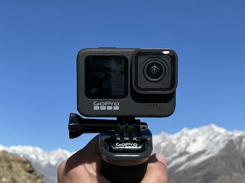

|
|
Home | About | Reviews | Articles | Contact |
 |
| Is The GoPro Hero 9 The Best GoPro Yet? Should You Take It Travelling? Is It Worth Upgrading To The GoPro Hero 9? Here’s My Hands On Review! |
| What’s New With The Hero 9? | |
| Lets cut right to the chase here and run through the main upgrades and extra features that the new GoPro Hero 9 is offering : • 5K resolution (limited to 30FPS) • Front facing screen • Extended battery life (up to 30% more) • Removable lens • 20MP stills • Changed form factor • Hypersmooth and Timewarp 3.0 • Horizon levelling • Compatibility with the MAX Lens Media Mod • Upgraded photos, HDR and Superphoto • New modes – including scheduled capture, duration capture, hindsight mode and webcam/streaming mode |
|
| Is 5K A Big Deal? | |
| One of the biggest things GoPro is pushing with the Hero 9 is that it’s the first GoPro to offer 5K. So is this a big deal for the average GoPro user and what does it mean?Well to be honest for 99% of GoPro users actually filming in 5K won’t be something you’ll actually do. Not only are the file sizes pretty big, but only high end laptops and computers will actually be able to edit the footage – especially if you’re putting together a longer edit!That being said though, the 5K sensor does allow a few solid upgrades that everyone can take advantage of. Firstly shooting on 5K allows you to pull out high resolution, 14MP still – which will be super useful for those shooting action sports. Just film in 5K and pull out any pics you want, scrolling through frame by frame, using the GoPro app on your phone. Easy as. | |
| Front Facing Screen = Perfect GoPro Selfies! | |
| One of the biggest upgrades for most GoPro users is going to be the front facing screen.gopro hero 9 review travel camera upgrade backpackerEssentially this allows you to perfectly frame your GoPro selfie shots and is also going to be a huge advantage for anyone wanting to use a GoPro for vlogging.Although you can’t adjust any setting using the front facing screen (use the back one or the app for that) you do have the option to either view it as a full screen or cropped screen view. Full screen gives you a preview of the whole scene the GoPro is capturing, or cropped screen gives you a bigger image (it fills the whole LCD screen) but you then obviously loose some of the stuff on the sides. | |
| Can I Use My Old Mounts? | |
| As the GoPro Hero 9 uses the same folding fingers as the Hero 8, and these are also backwards compatible with all the previous GoPro mounts, yes the GoPro Hero 9 will fit your existing mounts. Well nearly all of them! The changed form factor and size increase (yes the GoPro Hero 9 is slightly larger than the Hero 8) anything involving the cage style mount will need to be upgraded.Two noteable things you’ll need to re-buy are the Media Mod and the Supersuit/Dive Housing. Yup the original GoPro Media Mod (which most people have only been able to buy for the last 6 months) doesn’t fit the Hero 9, so you’ll need to shell out another US$79.99 / £79.99 / AU$129.95 to get a new one. Not a game changer for most GoPro users, but for those who want to use external microphones it’s something you’ll need to factor into your budget. | |
| The Negatives | |
| I’ve already run through my issues with the Media Mod upgrades, but the other thing that has puzzled me is the fact that both the Media Mod and MAX Lens Mod aren’t readily available at launch. I might be slightly impatient here but given the HUGE delay in the Media Mods with the Hero 8 launch I’m slightly dubious about how soon I’ll be able to take advantage of the full feature set the Hero 9 promises. So that’s something to keep in mind, especially if you’ve already kitted out a Hero 8 with the Mods you want. From a user stand point the lag on the front facing screen is certainly an annoyance and an imperfection I’m surprised it wasn’t fixed before launch. However, I’m hoping that both can be (and more importantly, WILL be) resolved relatively quickly with a software/firmware update. | |
| Would I Recommend The Hero 9? | |
| Even though the GoPro Hero 9 isn’t the perfect GoPro (I was really hoping for 4K @ 120FPS or maybe an inbuilt 3.5mm mic jack) it’s still easily the best GoPro they’ve ever built. Not only does it bring some awesome new features and specs, but the switch back to a removable lens shows that GoPro are learning from their mistakes and also what customers want. Yes admittedly this is probably due to the MAX Lens Mod add on and forcing Hero 8 users to upgrade to take advantage of this, but we’d like to think they’re listening too! It’s also pretty awesome that they’re adapting some of the powerful features of the GoPro MAX (both the front facing screen and the Horizon Levelling feature) into the standard GoPro range too. Overall the GoPro Hero 9 is easily the best GoPro for travel at the moment and a huge powerhouse for a lot of videographers, vloggers and photographers out there. |  |